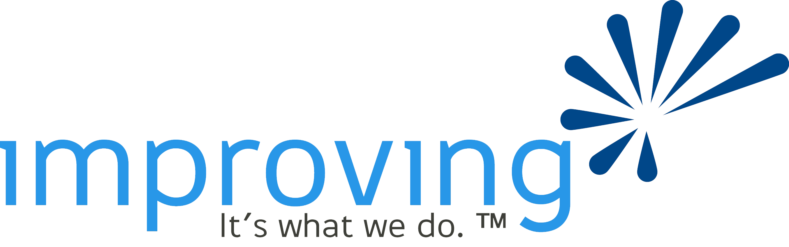

Hello world!
Rails Girls comes to Dallas! During the free two-day workshop we'll dive into the magical world of Ruby on Rails.
Apply now! Applications are open until November 16th 2012.
Follow @RailsGirlsDFW on Twitter for the latest news!
You learn designing, prototyping and coding with the help from our coaches.
You need your own laptop, curiosity and a sprinkle of imagination!
Want to help? We are looking for volunteers and Rails coaches. Email us.
| 18:00 - 19:00 |
Installation partyGet know the attendees a little bit before hand. Bring your laptop if you can, so we can install Ruby on Rails for you.Where: 16633 Dallas Parkway #100, Addison, TX 75001-6894, United States Google Map |
|---|---|
| 19:00 - 20:00 |
Web BasicKnow what's different of static and dynamic web pages, what is web app. |
| 20:00 - |
Coach dinnerAll of the coaches are welcome to our coach dinner, where we'll go through the program for the next day. |
| 9:00 - 10:00 |
Registration, coffee |
|---|---|
| 10:00 - 10:30 |
WelcomeOutline of the day & word from sponsors |
| 10:30 - 11:30 |
Understand Web ApplicationStorage, infrastructure, framework, presentation (Bentobox exercise) |
| 11:30 - 12:15 |
Ruby & Rails 101Ruby and Rails background, why Ruby and Rails, ruby first taste - Tryruby.org, rails magic |
| 12:15 - 13:00 | Lunch |
| 13:00 - 14:00 |
WorkshopJumpstart your first web application |
| 14:00- 14:20 |
Lightning Talks from coaches |
| 14:30 - 16:30 |
WorkshopExtend your application. |
| 16:30- 17:00 |
Lightning Talks from coaches |
| 17:00- 17:30 |
Wrap up + Q & A |
| 18:00 - |
AfterpartyOpen for everyone, meet cool people interested in tech. |
Applications close on November 16th
Acceptances informed on November 27th
Rails Girls Dallas is co-organized with our awesome partners.
Want to help? We're looking for partners & sponsors for the non-profit event! Email us!
 Improving Enterprises is a leading software development and advanced technology training company, headquartered in Dallas, Texas. Improving is a complete IT services firm, offering training, consulting, recruiting, and project services.
How much does the workshop cost? Nothing, it's free! You just need to be excited!
Who is this aimed for? Women of any age with basic knowledge of working with a computer. We’ve had people of all ages taking part. Most of the speeches are given in english, but small group work is done in german. Please bring your laptop.
Can men attend? Yes, but you need to be accompanied by an interested lady. Also, girls are given a priority.
I know how to program - How can I help? We’re also looking for people to be coaches. We’ll have a two-three hour workshop before the event to walk you through the curriculum. Email us